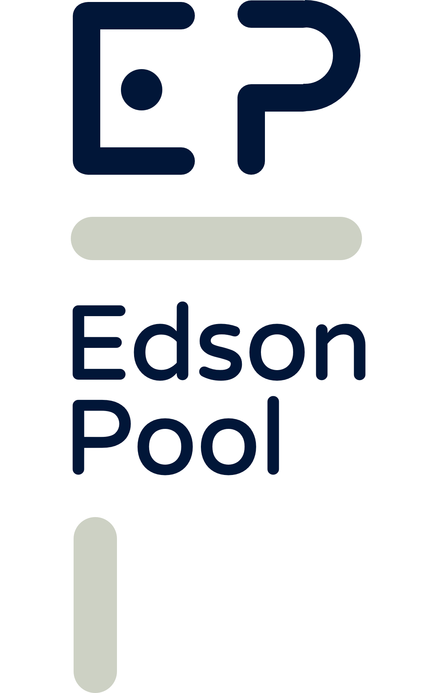

EDSON H. POOL DZUL.
Licenciado en Derecho por la Universidad Autónoma de Yucatán.
Auxiliar en la Notaría Pública número 128 del Estado de Yucatán, a cargo del Licenciado Desiderio J.M. Caamal Hoyos, desde enero de 2023.
Auxiliar Notarial en Caamal, Caamal & Asociados de 2006 a 2023.
Capturista en la Dirección del Registro Público de la Propiedad del Instituto de Seguridad Jurídica Patrimonial de Yucatán durante el primer bimestre de 2008.
Creador de los Enlaces Web desde el año de 2021.